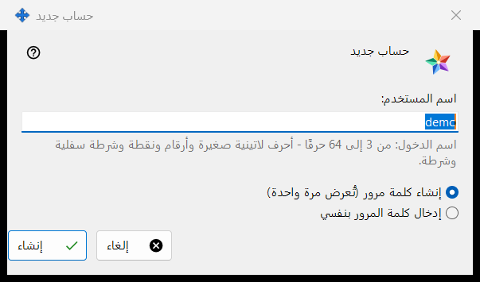
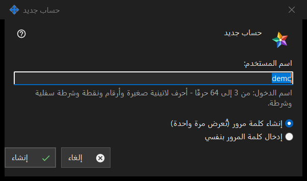

حساب جديد
الغرض من هذه النافذة
نافذة واحدة بوضعين. حساب جديد يضيف حسابًا إلى Media Exchange Server الذي تشغّله؛ وإعادة تعيين كلمة المرور: <اسم الدخول> تمنح حسابًا موجودًا كلمة مرور جديدة. تُفتحان من الزرين إضافة حساب.. وإعادة تعيين كلمة المرور.. أسفل قائمة الحسابات في صفحة Media Exchange Server ضمن إعدادات Share Manager؛ ويتطلب وضع إعادة التعيين تحديد حساب.


بهذا الترتيب
- في وضع الإضافة اكتب اسم الدخول.
- اختر طريقة إنشاء كلمة المرور.
- في وضع إعادة التعيين قرّر هل يُسجَّل خروج كل أجهزة الحساب.
- اضغط إنشاء أو إعادة تعيين.
- انسخ كلمة المرور المولَّدة من النافذة التالية، أو اكتب كلمة مرور من عندك.
عناصر النافذة
البيان للحساب الأول
عند إنشاء أول حساب تبدأ النافذة بالسطر قبل إنشاء أول حساب، اقرأ ما يستطيع مشغّل الخادم رؤيته وتحته صندوق للقراءة فقط يحوي البيان. أما الحسابات اللاحقة وعمليات إعادة التعيين فلا تعرضه.
اسم الدخول
في وضع الإضافة فقط. من 3 إلى 64 حرفًا: أحرف لاتينية صغيرة وأرقام ونقطة وشرطة سفلية وواصلة؛ وتُحوَّل الأحرف الكبيرة إلى صغيرة. يتحول التلميح إلى لون التحذير ما دام النص لا يصلح اسم دخول، ولا يتابع الزر إنشاء حتى يصبح صالحًا.
طريقة إنشاء كلمة المرور
الخيار إنشاء كلمة مرور (تُعرض مرة واحدة) هو الافتراضي: ينشئ البرنامج كلمة مرور عشوائية تستوفي القواعد وتعرضها النافذة التالية مرة واحدة فقط. أما إدخال كلمة المرور بنفسي فيفتح نافذة كلمة مرور الحساب، وفيها سطر مباشر يسمّي ما ينقص: 10 أحرف على الأقل مع حرف لاتيني كبير وآخر صغير ورقم.
تسجيل خروج كل جهاز
في وضع إعادة التعيين فقط. الخيار تسجيل خروج جميع أجهزة هذا الحساب فورًا أيضًا محدَّد افتراضيًا. وحينها يفيد سطر النتيجة بأن كلمة المرور تغيّرت وأن جميع أجهزة الحساب سُجّل خروجها؛ وبدون التحديد يفيد بأن كلمة المرور تغيّرت فقط.
بعد قبول الخادم
يفيد سطر النتيجة بأن الحساب أُنشئ. وتظهر كلمة المرور المولَّدة مرة واحدة في نافذة خاصة فيها الزران نسخ كلمة المرور وتعيين كلمة مرور خاصة بي.. اللذان يعيدان إلى وضع إعادة التعيين مع اختيار كتابة كلمة المرور. وعند تفعيل الخيار حفظ كلمات مرور الحسابات على هذا الكمبيوتر تُحفظ كلمة المرور أيضًا على هذا الكمبيوتر، ويحصل الحساب على الزر عرض كلمة المرور.. وإذا كان هذا الإصدار يتيح ميزات عميل التبادل ولا يملك هذا الكمبيوتر حسابًا خاصًا به، فإنه يسجّل دخوله بوصفه أول جهاز لهذا الحساب بكلمة المرور هذه.